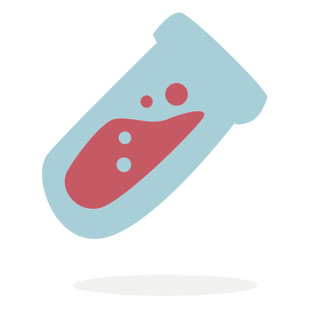

CEIC
The Cancer Evaluation and Intelligence Center (CEIC) has specialized on modern diagnostic procedures for cancer. CEIC offers international hospitals, private clinics and oncologists access to approved and certified technologies, which provide a reliable basis for a decision in case of a cancer disease. CEIC distributes diagnostic products, which prolong survival times, improve response to drugs and quality of life of cancer patients.

Transparent and Independent Research
Incomprehensible information, lack of transparency, standard therapies – patients with severe diseases are often confronted and overwhelmed by this. Risk-benefit relations of medical treatments are oftentimes not sufficiently known to physicians as well. This is exactly the point that CEIC’s services address.
Scientific Community
TherapySelect
TherapySelect is a young, innovative biotechnology company in Heidelberg. It is headed by Dr. Frank Kischkel and develops diagnostic procedures for cancer patients. The goal of these procedures is to increase survival times of the patients and improve their quality of life.
A cancer research cluster is located in Heidelberg. TherapySelect cooperates with the German Cancer Research Center and medical societies.
KPS
KPS is an international center for molecular informatics and diagnostics. It has ten years of experience on the field of molecular pharmaceutical diagnostics.
KPS provides therapeutic information services for analyzing molecular diagnostics. This helps oncologists to find the best targeted drugs.
 KPS
KPS is an international center for molecular informatics and diagnostics. It has ten years of experience on the field of molecular pharmaceutical diagnostics.
Partner Reference Lab
KPS is a partner reference lab for leading pharmacology companies (including Amgen, Merck, Roche, Astra).
Bioinformatic Services
KPS provides proprietary bioinformatic services for the functional and clinical interpretation of molecular diagnostics.
Molecular Pharmacological
KPS can currently test 58 genes and provide molecular pharmacological information on more than 200 targeted anticancer drugs in clinical use or trials linked to these genes.
Personalized Therapy
KPS helps patients find the oncology center that can provide a specific, personalized therapy, even if it is in clinical trials.
Molecular Diagnostics
KPS provides therapeutic information services for analyzing molecular diagnostics. This helps oncologists to find the best targeted drugs.
Menu 1
Ut enim ad minim veniam, quis nostrud exercitation ullamco laboris nisi ut aliquip ex ea commodo consequat.